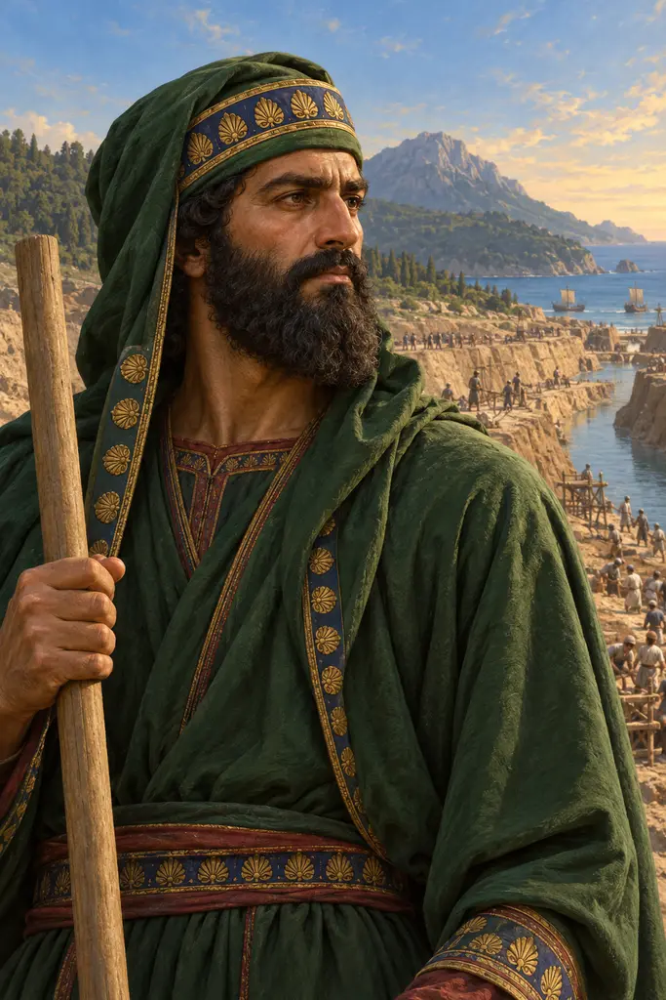
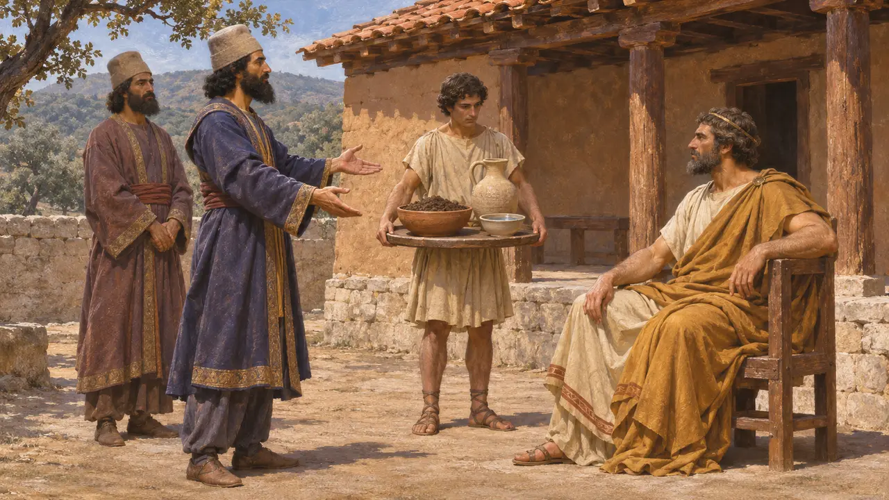
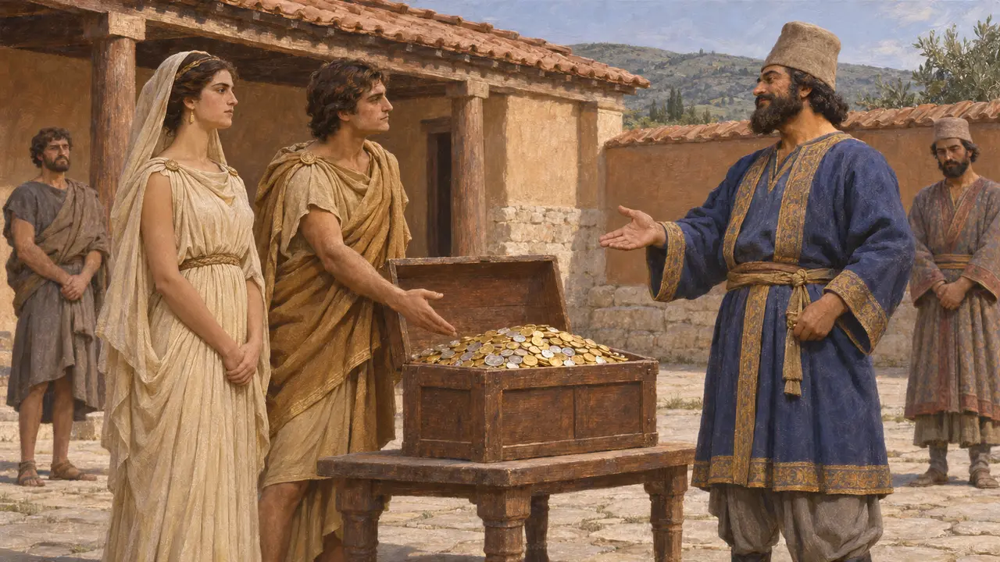
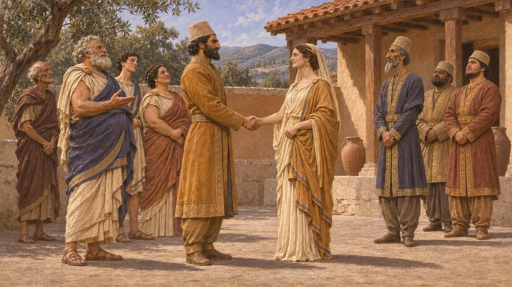
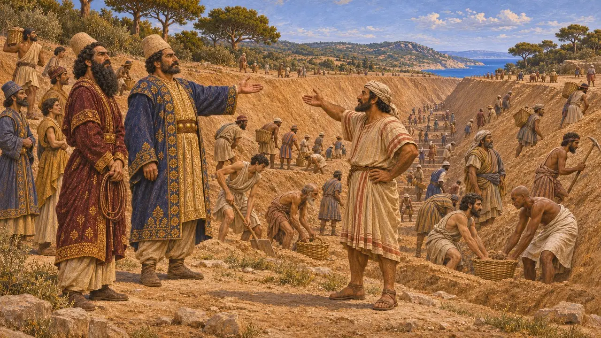
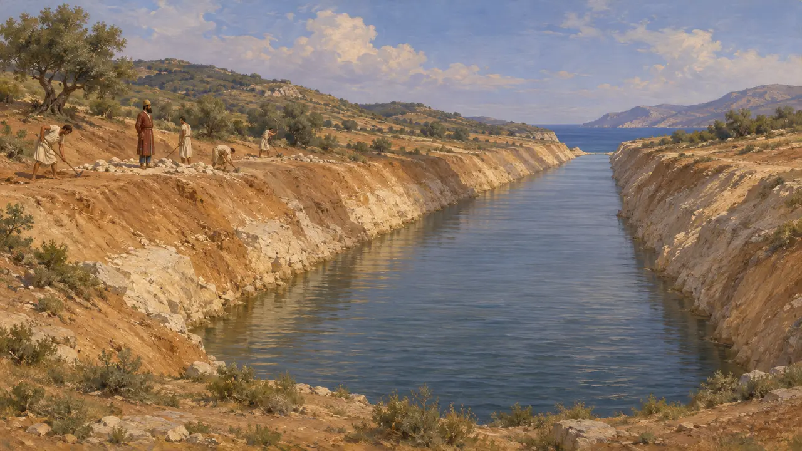
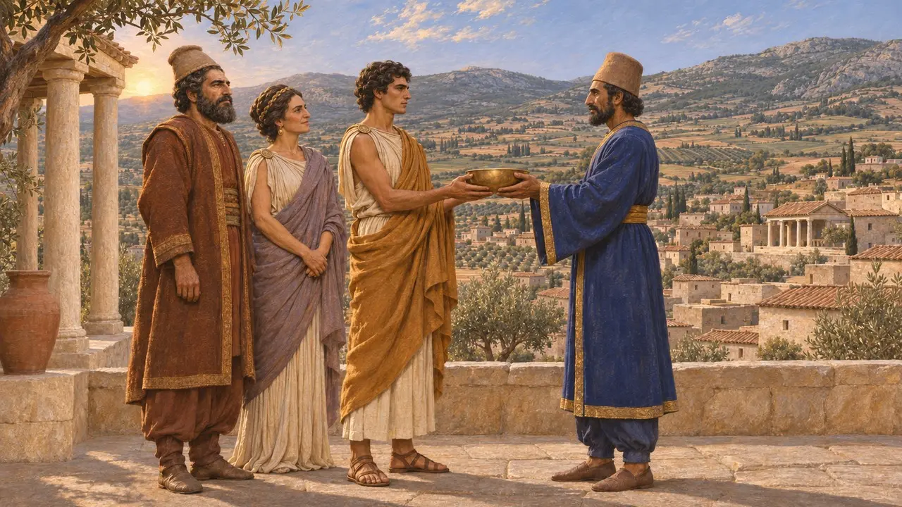

ブバレス
ペルシア貴族。メガバゾスの子で、アトス運河の監督官。紀元前483〜480年頃
ブバレスは紀元前6世紀末から5世紀初めのペルシア貴族で、知られていることはほぼすべてヘロドトスによる。マケドニア王家と婚姻を結び、アルタカイエスとともにアトス半島を貫くクセルクセスの運河の掘削を指揮した。これにより、紀元前480年のギリシア侵攻を準備した役人の一人となった。
ゲームでは： アトスのステージの年代記は、ヘロドトス7.22に従い、メガバゾスの子ブバレスをアルタカイエスとともに運河の監督者として挙げている。彼のその後の経歴について、ゲームはそれ以上触れない。

メガバゾスの子
古代の記述ヘロドトスによれば、ブバレスはメガバゾスの息子である。メガバゾスは、紀元前513年頃のスキタイ遠征の後、ダレイオスがトラキアに残した将軍であった。メガバゾスはペリントスと沿岸のトラキア人を服属させ、続いてマケドニア王アミュンタスのもとに使者を送り、王への服従の証である土と水を求めた。
Herodotus 5.1-2, 5.17

消えた使節とマケドニアの婚姻
古代の記述ヘロドトスによれば、ペルシアの使節たちは宴の席で傲慢にふるまい、アミュンタスの子である若きアレクサンドロスの命で殺された。ペルシアが捜索隊を送ると、その指揮を執ったのはブバレスであった。アレクサンドロスは多額の財貨と妹ギュガイアとの婚姻によって彼を黙らせ、詮議は打ち切られた。
Herodotus 5.18-21

マケドニアのために語られた物語
係争中多くの歴史家は使節殺害の話を疑っている。アレクサンドロスは後にギリシア人に対して自らを彼らの密かな味方として示しており、この話はその主張に都合がよい。ブバレスとギュガイアの結婚はより広く史実と認められている。これは従属国の支配者をペルシアの貴族の家系と結びつけるという既知のペルシアの慣行に合致し、実際にマケドニアは従属王国となった。
E. Badian, Herodotus on Alexander I of Macedon, 1994; P. Briant, From Cyrus to Alexander, 2002

アトスの監督官
古代の記述ヘロドトスは、アトス地峡を横切る運河の開削を任されたペルシア人として、ブバレスとアルタイオスの子アルタカイエスの名を挙げている。彼によれば、準備はおよそ3年に及び、多くの民族の男たちが鞭のもとで掘り進めたという。さらに、フェニキア人が最も巧みで、側面が崩れないよう溝の上部を広く掘ったと付け加えている。
Herodotus 7.22-23

現存するもの
同時代の記録ブバレスの名を記すことが確実な同時代の記念碑や文書は知られておらず、その経歴はヘロドトスの記述に依拠している。ただし運河そのものは実在した。1990年代に地峡を横断して行われた調査とボーリングにより、ヘロドトスが記す線に沿って埋没した水路の跡がたどられている。
B. S. J. Isserlin and others, The canal of Xerxes on the Mount Athos peninsula, Annual of the British School at Athens 89, 1994

息子アミュンタス
古代の記述ブバレスとギュガイアのあいだには、マケドニア人の祖父にちなんで名づけられた息子アミュンタスが生まれた。ヘロドトスによれば、王は彼にフリュギアのアラバンダを与えたというが、その名で知られる都市はカリアにあった。ヘロドトスの説明では、この姻戚関係こそ、紀元前479年にマルドニオスがマケドニアのアレクサンドロスを使者としてアテナイへ送った理由の一つであった。
Herodotus 8.136
出典
- Herodotus 7.22-23
- Herodotus 5.1-2, 5.17-21
- Herodotus 8.136
- E. Badian, Herodotus on Alexander I of Macedon: a study in some subtle silences, in S. Hornblower (ed.), Greek Historiography, 1994
- P. Briant, From Cyrus to Alexander, 2002
- B. S. J. Isserlin and others, The canal of Xerxes on the Mount Athos peninsula, Annual of the British School at Athens 89, 1994